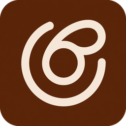

Manual de Marca
O Protocolo Ciclo Fértil é um método digital para mulheres que tentam engravidar. Não é mais uma orientação a adicionar à lista — é o caminho claro que une as quatro peças que a ciência validou.
Método de fertilidade natural que combina Corpo, Ciclo, Ambiente e Mente numa sequência aplicável. Voltado para mulheres tentantes brasileiras que já receberam orientações mas nunca tiveram um caminho claro para aplicá-las.
| Cor | Nome | Uso | |
|---|---|---|---|
| #4A2E1A | Cacau | Texto principal, fundos escuros, cabeçalho | |
| #C8956C | Terracota | Destaques, ícones, palavras em evidência | |
| #6B3A1F | Terracota Escuro | Botão CTA principal, call-to-action | |
| #FDFAF6 | Marfim | Fundo principal da página | |
| #F5E6D6 | Creme | Fundo de seções alternadas, cards | |
| #A8B89A | Sálvia | Pilar Ambiente, elementos secundários |
Cormorant Garamond Bold · 42–52px · Line-height 1.1
Cormorant Garamond Bold · 32–48px · Gradiente cacau→terracota
DM Sans Medium · 9–11px · Caps · Letter-spacing 2–3px
DM Sans Regular · 15–17px · Line-height 1.7
Valida a dor antes de apresentar a solução. A leitora precisa sentir que é compreendida antes de ser convencida.
Frases curtas. Sem jargão médico excessivo. Fala como uma amiga que sabe do assunto, não como um especialista distante.
Afirma com clareza. Não pede desculpa por ter a solução. Mas nunca promete o que não pode garantir.
Linguagem de conversa, não de campanha. Reconhece a fé como parte da jornada. Nunca subestima a dor da tentante.
Gradiente linear 135° de Cacau (#4A2E1A) para Terracota (#C8956C). Aplicado em H2 e palavras-chave em H1.
DM Sans Medium · 9–11px · Terracota · Caps · Letter-spacing 2.5px
Border-radius 100px. Font-weight 600. O CTA repete o benefício — nunca apenas "Clique aqui".
Fundo branco · Box-shadow suave · Border-radius 12px · Ícone + título em serif + descrição em sans.
Não é mais uma orientação
pra adicionar à lista.
É o método que faltava.
Fundo Cacau. Texto Marfim. Destaque em Terracota itálico.